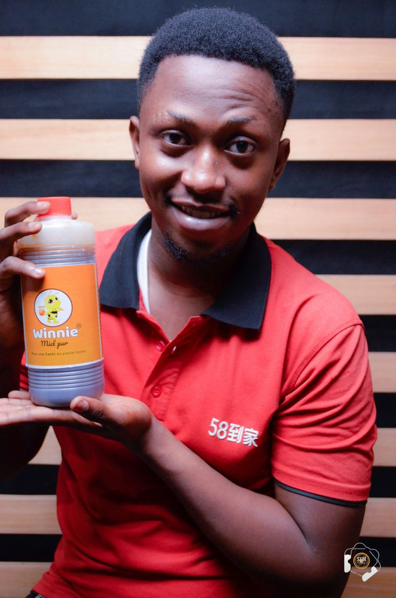
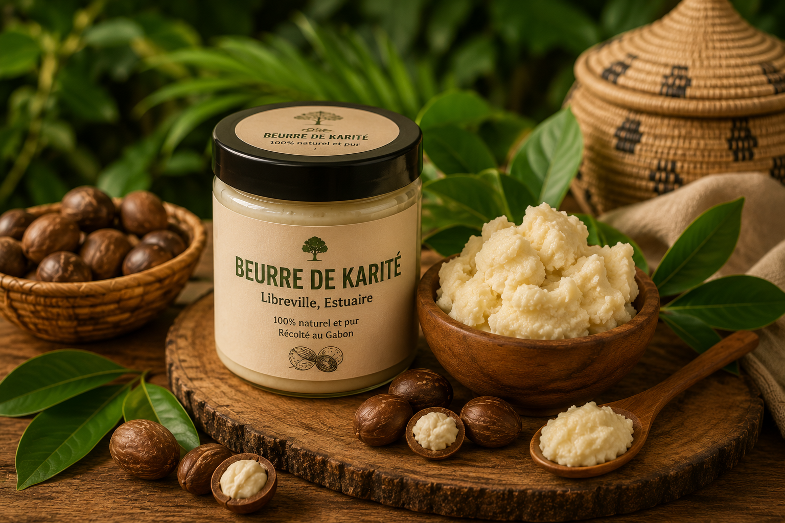

Découvrez les hommes et les femmes derrière chaque produit, contactez-les directement
Lastoursville, Libreville, Tchibanga

Situé à Libreville, livre dans tout le Gabon

Libreville, Lambaréné, Mouila